CS184/284A Spring 2025 Homework 2 Write-Up
Link to webpage: https://cal-cs184-student.github.io/hw-webpages-Wang-Shaoyi/hw2/index.html
Link to GitHub repository: https://github.com/cal-cs184-student/hw2-meshedit-arch000

Overview
We worked through core geometric modeling techniques from lecture by constructing Bézier curves and surfaces with the de Casteljau procedure, editing triangle meshes using a half-edge representation, and implementing Loop subdivision for mesh refinement.Section I: Bezier Curves and Surfaces
Part 1: Bezier curves with 1D de Casteljau subdivision
We evaluate a Bézier curve using de Casteljau's algorithm by repeatedly performing linear interpolation between adjacent control points at a parameter t (where t is in (0,1)). In one subdivision step, we take points \(p_i\) and compute a new, shorter list of intermediate points \(p'_i\) using \(p'_i = (1 - t)p_i + t p_{i+1}\). Repeating this process until only one point remains gives the point on the curve at parameter t.
In our implementation, evaluateStep performs exactly one level of this procedure. We first initialized std::vector<Vector2D> next. We then loop over each adjacent pair points[i] and points[i+1], compute the interpolated point as p_prime = p0 * (1 - t) + p1 * t, append it to next via push_back, and return next as the control points for the next subdivision level.
Below shows our implementation of each level of the evaluation on a Bezier curve with 6 control points:
|
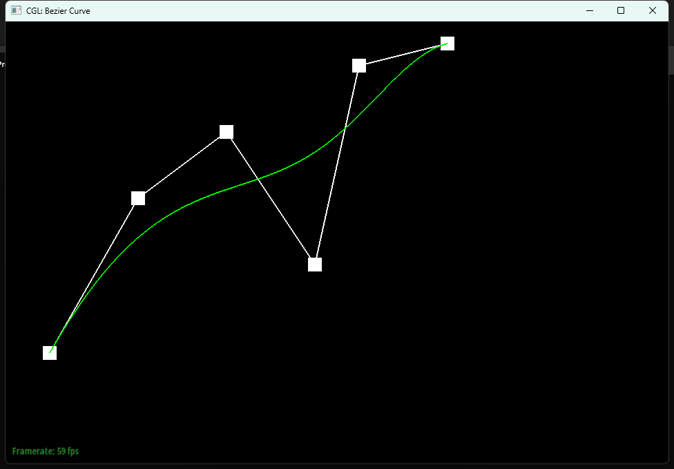 |
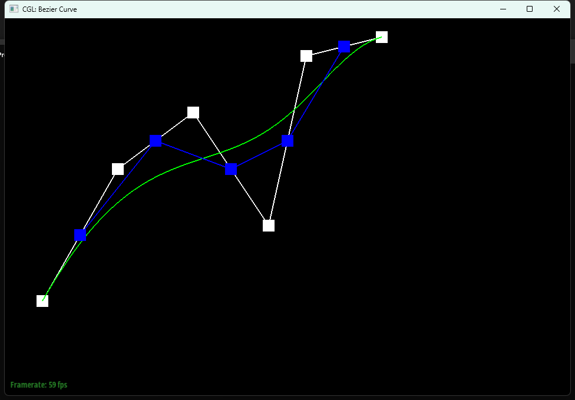 |

|

|
|

|
After adjusting the curve by slightly moving the control points, below shows the result with different t values:

|

|

|

|
Part 2: Bezier surfaces with separable 1D de Casteljau
We extend de Casteljau's algorithm from Bézier curves to Bézier surfaces by applying the same 1D interpolation procedure in two parametric directions. A Bézier patch is defined by an (n * n) grid of control points, and evaluating the surface at (u, v) can be done by first collapsing the grid along one direction using u, producing a single 3D point per row, and then collapsing those resulting points along the other direction using v. This two-stage reduction yields the final surface point at (u, v).
In our implementation, evaluateStep performs one de Casteljau level on a 1D list of 3D points by computing intermediate points \(p'_i = (1 - t)p_i + t p_{i+1}\) and returning the shorter list. evaluate1D repeatedly calls evaluateStep (with a fixed t) until only one point remains, which is the curve point at that parameter. Finally, evaluate evaluates the Bézier surface by running evaluate1D on each row of controlPoints with parameter u to form v_points, then running evaluate1D on v_points with parameter v to produce the final point on the patch.
Below shows our screenshot:

bez/teapot.bezSection II: Triangle Meshes and Half-Edge Data Structure
Part 3: Area-weighted vertex normals
For this part, we implemented Vertex::normal() by walking once around the one-ring of each vertex and accumulating the normals of all incident triangles. We move from one adjacent face to the next with the usual half-edge pattern h = h->twin()->next(), so the traversal stays local and visits every face touching that vertex exactly once.
At each step, we read the three triangle vertices from the current half-edge cycle and compute the cross product of two edge vectors. The nice part is that the magnitude of that cross product is already proportional to the triangle's area, so simply summing those face normals gives us an area-weighted average automatically. After the loop, we normalize the accumulated vector and return it as the final shading normal.
In practice, this makes the mesh look much smoother on curved surfaces while still letting larger triangles contribute more strongly to the final normal direction.
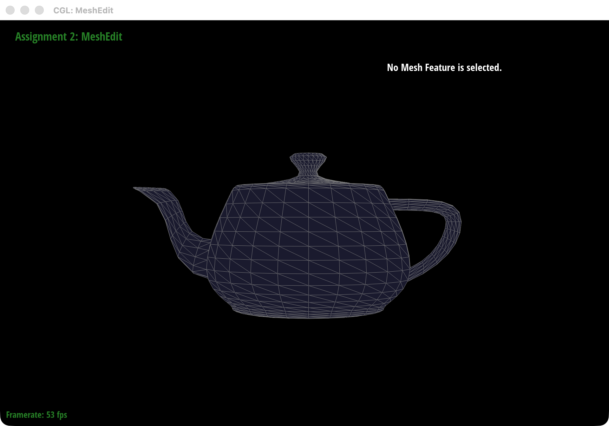
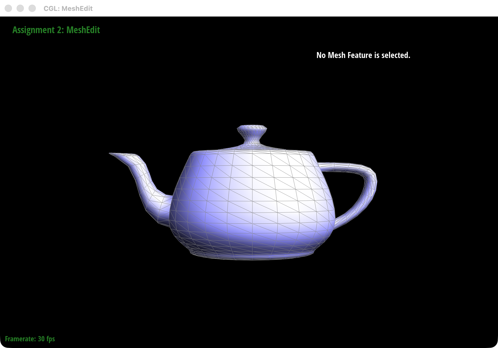
Part 4: Edge flip
We implemented edge flip as a purely local rewiring pass in the half-edge structure, so no mesh elements are created or deleted. Starting from an interior edge shared by two triangles, we label the six surrounding halfedges, identify the opposite vertices a and d, and replace the old diagonal (b, c) with the new diagonal (a, d).
Once the neighborhood is labeled, the rest is careful bookkeeping. We update the two halfedges on the flipped edge, rebuild the two triangular 3-cycles with fresh next pointers, and then refresh the affected face->halfedge(), edge->halfedge(), and vertex->halfedge() handles so every iterator still lands on a valid representative. Boundary edges are rejected immediately, since they do not have the two adjacent triangles required for a valid flip.
The most useful debugging checks were very local: each face should still satisfy h->next()->next()->next() == h, the twin relationship on the flipped edge should remain symmetric, and only the two halfedges on the flipped edge should keep pointing to that edge object. Our main bug came from attaching the reused edge to the wrong halfedge, which broke adjacency right away.
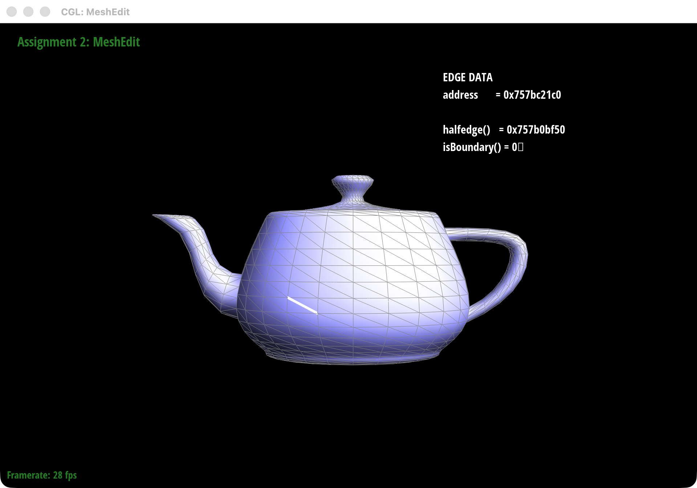
Part 5: Edge split
We treated edge split as a small local surgery on an interior edge. Starting from the original edge e0 and its two incident triangles, we gather the six existing halfedges, insert a new midpoint vertex m, and rewire the local neighborhood so the original two triangles become four.
For the required implementation, we only split interior edges. If either side of e0 is on the boundary, the function returns immediately and leaves the mesh unchanged.
The split creates one new vertex, three new edges, two new faces, and six new halfedges. We reuse the original edge object as the b-m edge, then explicitly call setNeighbors(...) so the final four triangles are (a, b, m), (a, m, c), (d, c, m), and (d, m, b). The new vertex's representative halfedge also matters: pointing m->halfedge() along the reused split edge, instead of one of the brand-new edges, made later traversals and flips much more reliable.
The main debugging issue here was a stale face->halfedge() pointer. In one early version, an original face still pointed to a halfedge that had been reassigned to a different triangle after the split, so traversal silently followed the wrong 3-cycle. Once we made sure every face representative was chosen from its final triangle, the operation became stable.
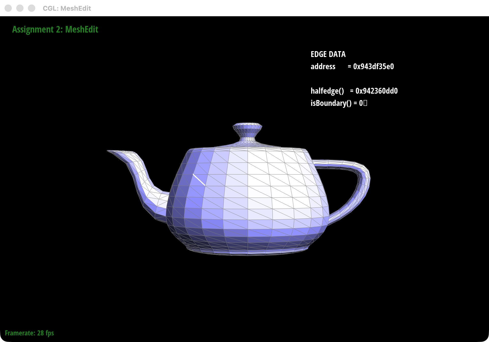
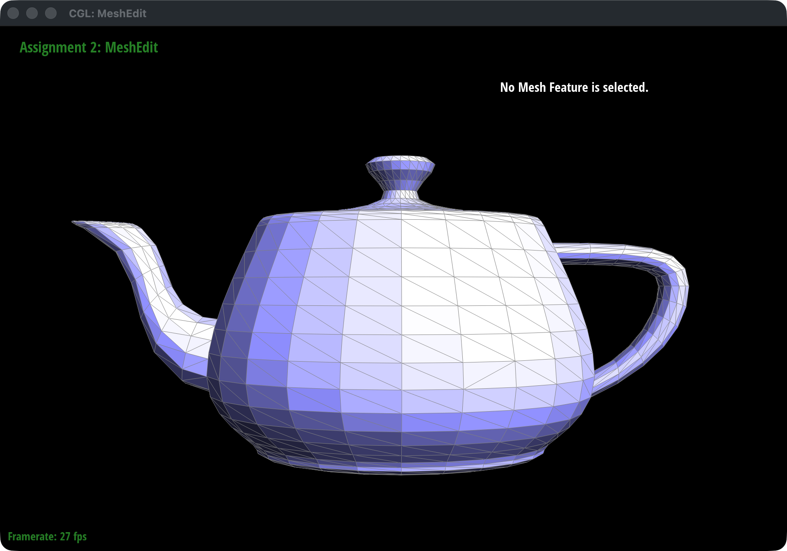
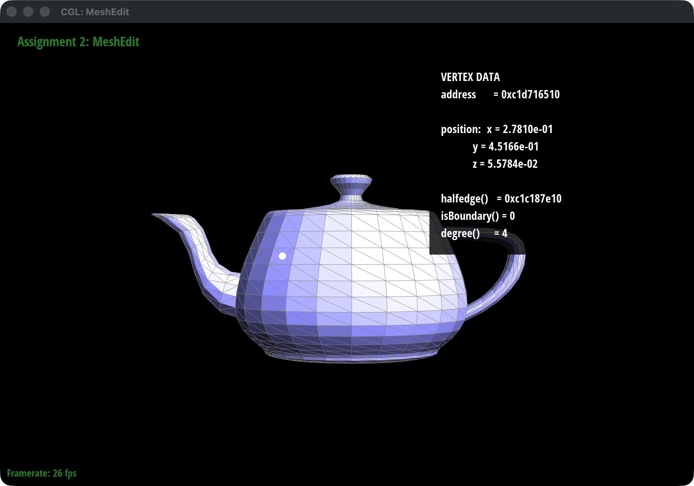
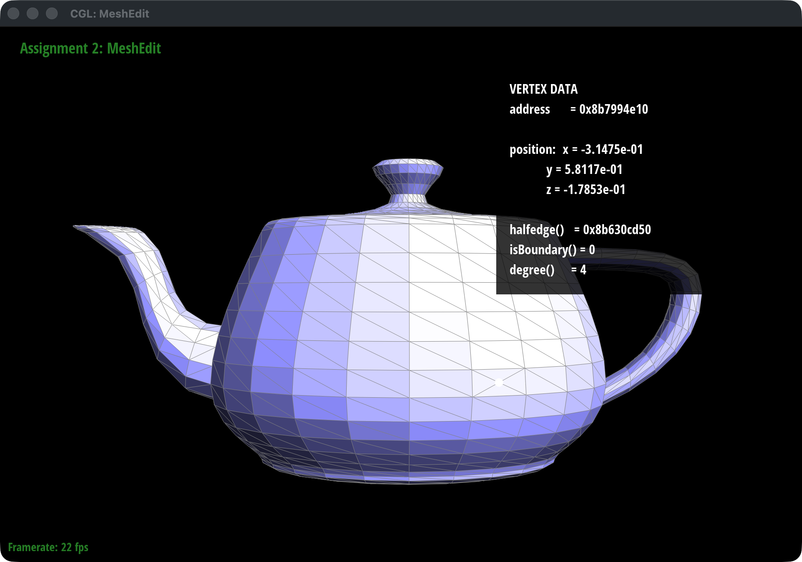
Part 6: Loop subdivision for mesh upsampling
We implemented Loop subdivision in MeshResampler::upsample() using the standard five-pass pipeline: first compute updated positions for the original vertices, then compute split positions for the original edges, split every original edge exactly once, flip the new edges that connect an old vertex to a new one, and only then commit all staged positions. Keeping those passes separate made the whole routine much easier to reason about.
Position updates
For an interior vertex with valence n, we used the usual Loop update rule:
\[ \mathbf{v}' = (1 - n u)\mathbf{v} + u\sum_{i=1}^{n}\mathbf{v}_i,\quad u = \begin{cases} \frac{3}{16}, & n = 3 \\ \frac{3}{8n}, & \text{otherwise} \end{cases} \]
For boundary vertices, we also implemented the boundary rule so the surface stays stable near open edges:
\[ \mathbf{v}' = \frac{3}{4}\mathbf{v} + \frac{1}{8}(\mathbf{v}_1 + \mathbf{v}_2) \]
For the new vertex inserted on an interior edge (A, B) with opposite vertices (C, D), we precomputed the split point with:
\[ \mathbf{m} = \frac{3}{8}(A + B) + \frac{1}{8}(C + D) \]
On boundary edges, we fall back to the midpoint rule:
\[ \mathbf{m} = \frac{1}{2}(A + B) \]
Connectivity updates and debugging
Before splitting anything, we copy all original edges into a separate list. That guarantees each original edge is split exactly once, even though the mesh is changing during the pass. Every newly created vertex is marked with isNew = true and receives the newPosition that we already stored on its parent edge.
After the splits, we classify the edges touching each new vertex. The two edges that lie along the original split edge stay marked as old, while the side edges to the opposite old vertices are marked as new. We then flip only those new edges that connect one old vertex and one new vertex, which is the standard Loop connectivity cleanup step.
The biggest implementation rule here was keeping a strict two-buffer workflow: every computation reads from position and writes to newPosition, and we copy newPosition back into position only once at the very end. Whenever the mesh behaved strangely, the first thing we checked was whether a local half-edge invariant or that staging rule had been violated.
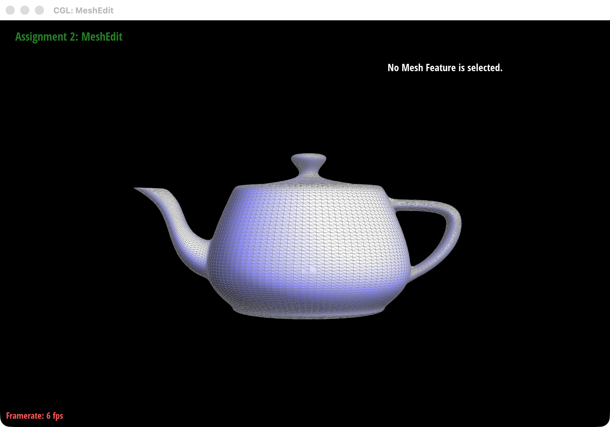
What we observed
After a few iterations, sharp edges and corners round off quickly. That is exactly what Loop subdivision is supposed to do: repeated neighborhood averaging drives the mesh toward a smooth limit surface, so high-curvature features get spread out over nearby triangles.
If we want a sharp feature to hold up better, pre-splitting the nearby edges helps. Adding a little more local resolution gives the subdivided mesh more freedom to approximate that corner before the smoothing steps start blending everything together.
Cube experiment
On dae/cube.dae, repeated subdivision also makes the cube drift slightly away from perfect symmetry. The root cause is the initial triangulation: each quad already has a diagonal, and if those diagonals are not arranged symmetrically, the local neighborhoods are not symmetric either. Loop subdivision then keeps amplifying that small mismatch.
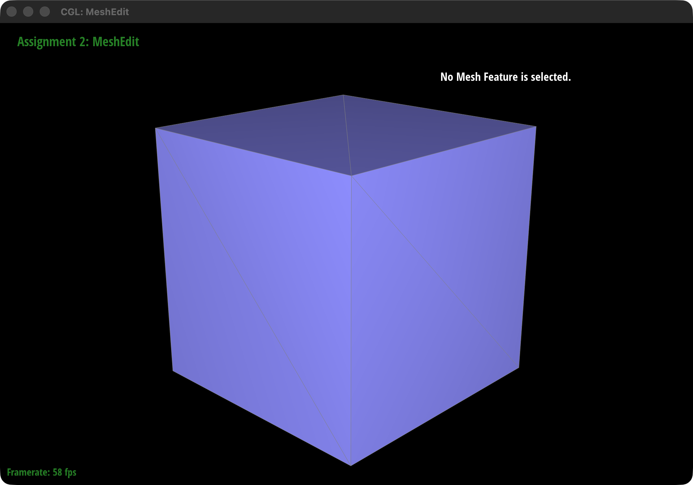
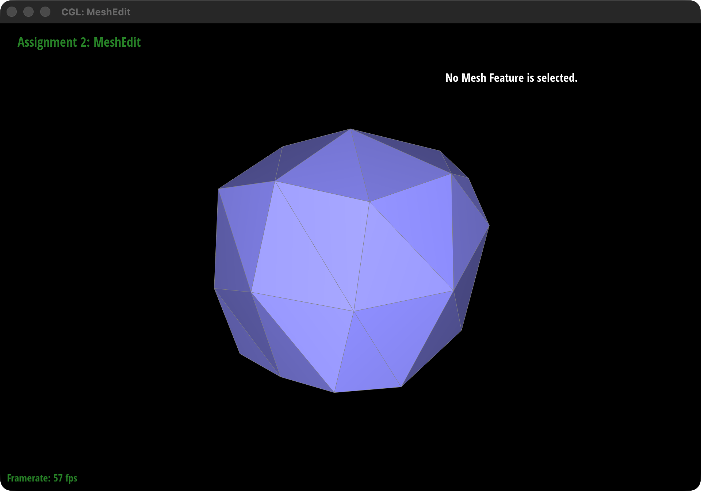
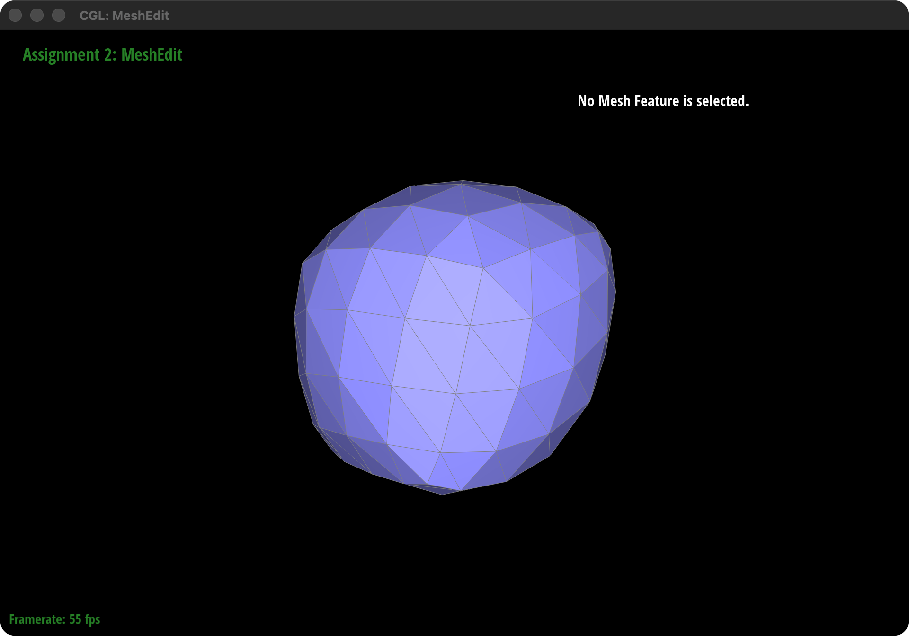
A simple fix is to preprocess the cube with edge flips, and optionally a few strategic edge splits, so corresponding faces share a more balanced triangulation pattern. Once the connectivity is symmetric, the repeated updates stay much more symmetric too.
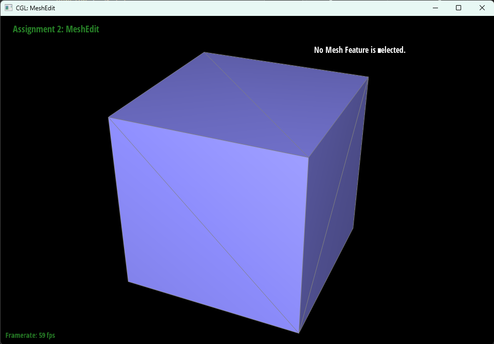
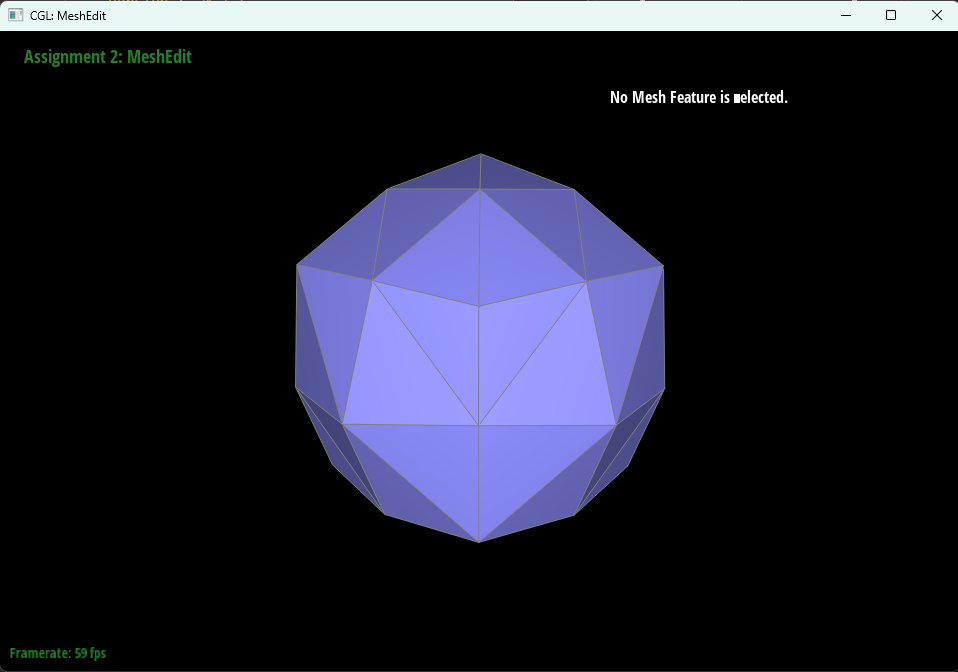
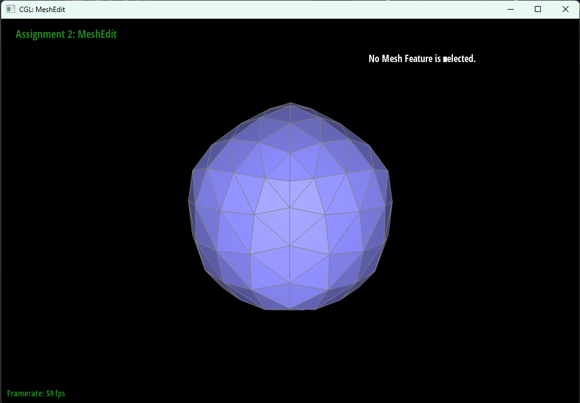
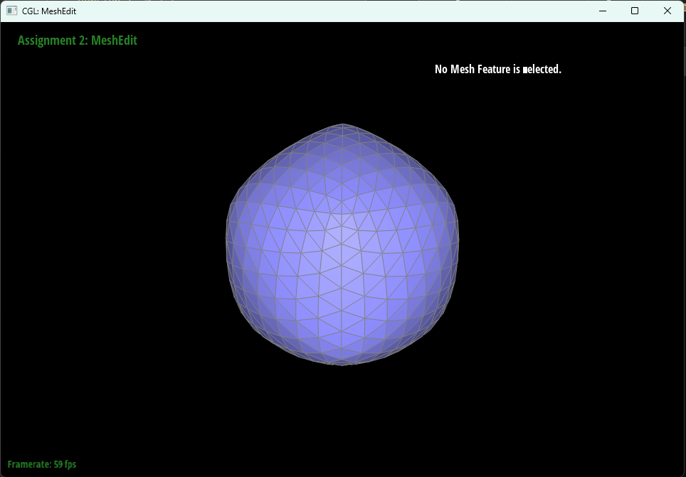
Boundary handling (extra credit)
We also implemented the boundary version of Loop subdivision. Boundary vertices use the 1D boundary update rule, boundary edge points use simple midpoints, and the resulting surface stays stable near open borders instead of producing visible artifacts.
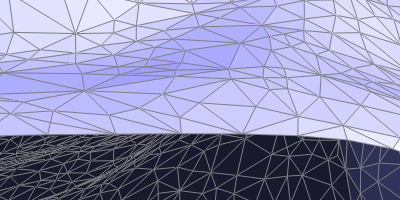
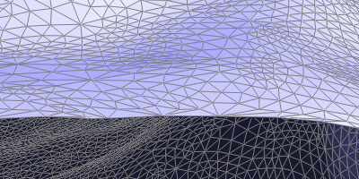
(Optional) Section III: Potential Extra Credit - Art Competition: Model something Creative
We did not submit the art competition extra credit for this homework.